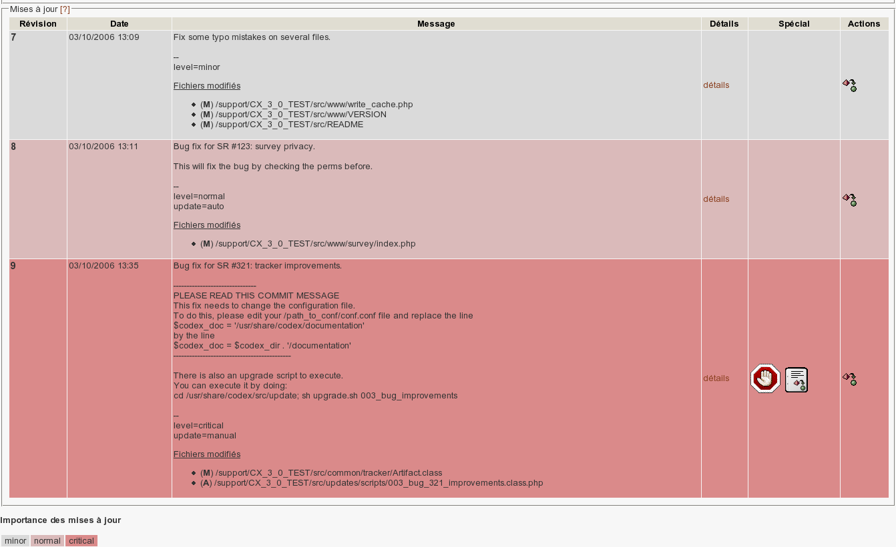
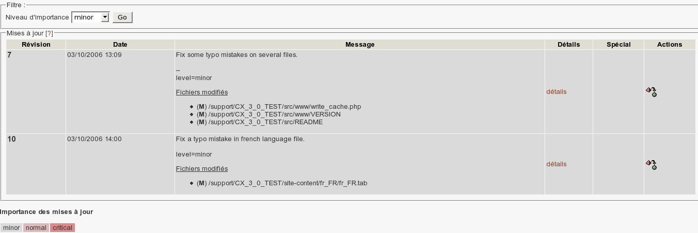
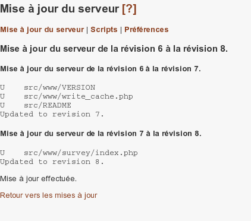
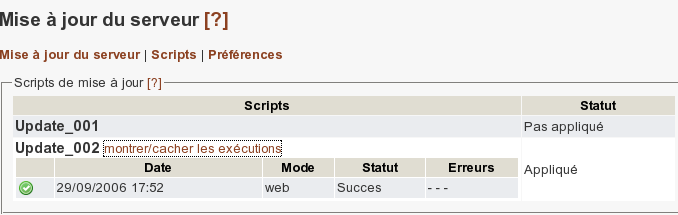

Capture d'écran de l'interface 'Mises à jour disponibles'
Cette interface affiche les informations à propos des mises à jour disponibles. Chaque mise à jour correspond à une révision. Les mises à jours sont affichées dans l'ordre ascendant des révision. Pour chacune, les propriétés suivantes sont affichées :
- Une indication sur l'importance de la mise à jour (les valeurs possibles sont minor, normal et critical). Voir le code couleur associé,
- Le numéro de la révision,
- La date à laquelle la révision a été effectuée,
- Le message associé à la révision (le message de commit). Celui-ci est important et donne des indications sur les modifications intervenue lors de la mise à jour et éventuellement donne plus d'informations sur les opérations manuelles à effectuer (lancement d'un script, mise à jour de base de données, etc.),
- Les fichiers impactés par cette révision,
- Un lien vers le détail de la révision,
- Des informations complémentaires concernant la mise à jour :
- Une indication sur les éventuelles opérations manuelles liées à la mise à jour.
Si tel est le cas, la mise à jour n'est pas autorisée, ceci pour vous 'forcer' à lire le message de commit et à effectuer
les opérations associées (voir la section Interventions manuelles et Mode force pour plus de détails).
- Une indication sur la présence éventuelle d'un script de mise à jour à exécuter.
Si tel est le cas, l'exécution du script est possible sous certaines conditions
(voir la section Stratégie de mise à jour pour plus de détails).
- Une indication sur une éventuelle modification de la base données.
Dans ce cas, il est fortement recommandé de lire le message de commit et de suivre les indications.
Filtrer les mises à jour

Capture d'écran du filtre
Le filtre vous permet de consulter les mises à jour selon leur niveau d'importance.
Les mises à jours sont toujours triées par révision.

Capture d'écran de l'interface 'Mises à jour automatique du serveur'
Le plugin permet de mettre à jour le serveur automatiquement via l'interface web de CodeX.
La mise à jour du serveur s'effectue toujours de la révision courante de votre copie de travail
vers la révision de votre choix (supérieure à la révision courante), et en effectuant toutes
les mises à jours intermédiaires.
Pour mettre à jour automatiquement le serveur, cliquer sur l'icone de mise à jour à droite de la révision souhaitée.
La mise à jour s'effectue en deux temps.
- Simulation de mise à jour
- Le système simule la mise à jour en vérifiant :
- qu'il n'y a pas de mise à jour manuelle,
- qu'il n'y pas de conflits au niveau de Subversion,
- qu'il n'y a pas de conflits au niveau des scripts.
- Mise à jour effective
- Si aucun conflit n'est détecté au niveau de la simulation,
- Après confirmation de la part de l'utilisateur,
- Mise à jour incrémentale (révision par révision)
- Test de succès pour chaque révision,
- Compte-rendu à l'utilisateur des actions effectuées pour chaque révision,
- Détails des éventuelles exécutions de scripts de mise à jour.
Stratégie de mise à jour
Stratégie au niveau de la simulation :
Le système vérifie tout d'abord qu'il n'existe pas de mise à jour manuelle entre la révision courante et la mise à jour demandée.
Une mise à jour manuelle interdit dans un premier temps la mise à jour du serveur.
Il est en effet possible de forcer la mise à jour, mais nous souhaitons attirer votre attention sur les dangers d'une telle opérations
(voir la section Mode force pour plus de détails).
Le système vérifie ensuite qu'il n'y a pas de conflit au niveau de subversion.
Pour ce faire, le système simule une mise à jour globale de la révision courante vers la révision demandée.
(en utilisant la commande subversion svn merge --dry-run -r <révision copie de travail>:<révision demandée> <dépôt subversion> <répertoire copie de travail>).
Le système vérifie ensuite qu'il n'y a pas de conflit au niveau des scripts de mise à jour.
Un script de mise à jour sera exécuté si et seulement si :
- Le script est ajouté dans la mise à jour demandée et
- il n'est pas supprimé dans une révision ultérieure et
- il n'est pas modifié après la dernière révision de la mise à jour demandée.
Dans le cas où un script serait modifié, la seule exécution du script sera effectuée lors de la dernière modification.
Un script de mise à jour ne sera pas exécuté si :
- Ce même script est supprimé dans une révision ultérieure. Deux cas peuvent alors se présenter :
- la mise à jour demandée va jusqu'à la suppression du script : dans ce cas, le script est simplement ignoré (non exécuté), et la mise à jour est possible.
- la mise à jour demandée ne va pas jusqu'à la suppression du script : dans ce cas, la mise à jour n'est pas autorisée. En effet, si un script est supprimé,
il est possible que les révisions intermédiaires laissent le serveur dans un état instable. Il est donc obligatoire de mettre à jour le serveur jusqu'à
la suppression du script.
- Ce script a été ajouté avant la révision courante (la première apparition de ce script dans la mise à jour demandée est une modification ou une suppression).
Ce cas extrèmement rare pourrait résulter d'une erreur de script et d'une mise à jour du serveur avant correction de l'erreur. Dans ce cas,
la mise à jour du serveur n'est pas autorisée. Il faudra traiter la situation au cas par cas.
- Ce script est modifié dans une révision ultérieure ne faisant pas partie de la mise à jour demandée. Dans ce cas, il est obligatoire
d'effectuer la mise à jour jusqu'à la dernière modification du script.
Stratégie au niveau de la mise à jour :
Après la simulation et la confirmation de la mise à jour, le système adopte
presque la même stratégie, sauf en ce qui concerne la mise à jour subversion.
La mise à jour est incrémentale, en analysant à chaque fois le retour subversion pour détecter les éventuelles erreurs.
La commande subversion utilisée est la suivante :
svn update -r <révision demandée>
Interventions manuelles et Mode force :
Certaines mises à jour peuvent nécessiter des interventions spéciales, qu'il est préférable de faire manuellement.
Il peut s'agir d'opérations à faire en plus de la simple mise à jour de la copie de travail,
comme la modification d'un fichier système, nécessitant les droits root par exemple, ou encore une intervention nécessitant l'arrêt temporaire du serveur).
Dans ce cas, la révision est étiquetée comme nécessitant une intervention manuelle et comme nous l'avons vu lors de la stratégie de la simulation,
une telle situation est bloquante du point de la mise à jour automatique. Cela permet d'attirer votre attention sur le caractère spécial de la mise à jour
et sur le message de commit qui contiendra les indications quant à la nature de la mise à jour.
Il est malgré tout possible de forcer la mise à jour, mais nous souhaitons attirer votre attention sur les dangers d'une telle opérations
Le non respect des indications données dans le message de commit d'une telle mise à jour peut entraîner le serveur dans un état instable.
N'utilisez donc le mode "force" que si vous êtes sûr de savoir ce que vous faîtes.

Capture d'écran de l'interface 'Consultation des scripts de mises à jour'
Cette interface affiche les informations concernant les scripts de mise à jour.
Pour chaque script, le statut du script est affiché (Appliqué, Jamais appliqué, Appliqué avec des erreurs),
avec la possibilité d'afficher le détails de chaque exécution :
- date et heure d'exécution du script,
- mode d'exécution du script (interface web ou console),
- statut de l'exécution du script (succès ou erreur),
- messages d'erreurs le cas échéant.